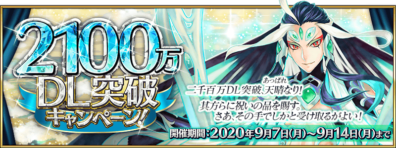
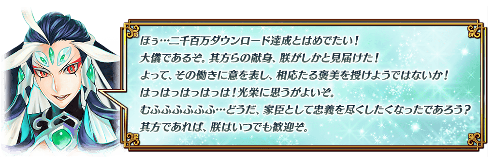
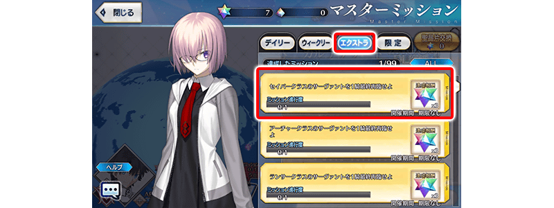

◆舉辦期間◆
2020年9月7日(一) 17:00～9月14日(一) 11:59
※本頁面皆為開發中圖片。會有與實際圖片相異的情況。
◆有關從者真名的注意◆
在2018年12月31日(二) 23:00以後新配信的主線故事及期間限定活動、一部份關卡、宣傳活動及召喚中，會顯示隱藏真名的對象從者真名。
※2018年12月31日(一) 22:59前已經配信的主線故事、復刻活動、一部份關卡中不在此限。

為了記念2100萬DL突破，實施特別的登入獎勵。
在下述期間中7天內連續登入的話，贈送白銀果實10個、睿智的猛火ALL★4(SR)10張、黃金果實10個、1,000萬QP、英靈結晶・星之芙芙ALL★3(HP)10張、英靈結晶・太陽之芙芙ALL★3(ATK)10張、呼符10張(聖晶石召喚最大11次份)豪華報酬！
並且，在同期間中登入4次(1天算1次)的話，合送英靈結晶・流星之芙芙ALL★4(HP)1張、英靈結晶・日輪之芙芙ALL★4(ATK)1張、稀有稜鏡1個、獸之足跡1個！
◆舉辦期間◆
2020年9月8日(二) 3:00～9月15日(二) 2:59
◆贈送對象◆
2020年9月14日(一) 2:59前通過「特異點F 炎上汙染都市 冬木」的御主對象
※上述時間前，在管理室(ターミナル)畫面的關卡橫幅必須要有「CLEAR」的文字顯示。
【特別連續登入獎勵】
| 登入天數 | 贈送內容 | |
|---|---|---|
| 第1天 |

|
白銀果實 10個 |
| 第2天 |

|
睿智的猛火ALL★4(SR) 10張 |
| 第3天 |

|
黃金果實 10個 |
| 第4天 |

|
1,000萬QP |
| 第5天 |

|
英靈結晶・星之芙芙ALL★3(HP) 10張 |
| 第6天 |

|
英靈結晶・太陽之芙芙ALL★3(ATK) 10張 |
| 第7天 |

|
呼符 10張(聖晶石召喚最大11次份) |
※登入獎勵會在每天3:00配發。 ※連續登入天數中斷後，無法領取之後的禮物。 ※(聖晶石召喚最大11次份)限在同一個聖晶石召喚進行的情況。 ※最多能領取7次，但根據成為贈送對象的時間點，可能無法到此上限。
【特別次數登入獎勵】
| 登入天數 | 贈送內容 | |
|---|---|---|
| 第1次 |
|
英靈結晶・流星之芙芙ALL★4(HP) 1張 |
| 第2次 |
|
英靈結晶・日輪之芙芙ALL★4(ATK) 1張 |
| 第3次 |

|
稀有稜鏡 1個 |
| 第4次 |

|
獸之足跡 1個 |
※登入獎勵會在每天3:00配發。 ※合計4天內能領取，但根據成為贈送對象的時間點，可能無法到此上限。

在御主任務(エクストラ任務)，追加可透過進行從者的最終再臨次數來達成的新任務。
達成所有任務的話，可得到最多72個(聖晶石召喚最大26次份)的聖晶石！
※就算從者已經最終再臨的玩家，也能同様地領取通過報酬。 ※(聖晶石召喚最大26次份)限在同一個聖晶石召喚進行的情況。
◆翻新實施時間◆
2020年9月7日(一) 17:00～
◆通過報酬的領取方式◆
在御主任務畫面顯示的「Extra(エクストラ)」的項目內，會顯示有關從者的最終再臨達成次數的任務顯示，請點擊已通過任務來領取達成報酬。

◆追加Extra(エクストラ)任務◆
| 任務名稱 | 任務達成報酬 | |
|---|---|---|
| 最終再臨1位Saber職階的從者 |

|
聖晶石 3個 |
| 最終再臨3位Saber職階的從者 |
|
聖晶石 3個 |
| 最終再臨5位Saber職階的從者 |
|
聖晶石 3個 |
| 最終再臨1位Archer職階的從者 |
|
聖晶石 3個 |
| 最終再臨3位Archer職階的從者 |
|
聖晶石 3個 |
| 最終再臨5位Archer職階的從者 |
|
聖晶石 3個 |
| 最終再臨1位Lancer職階的從者 |
|
聖晶石 3個 |
| 最終再臨3位Lancer職階的從者 |
|
聖晶石 3個 |
| 最終再臨5位Lancer職階的從者 |
|
聖晶石 3個 |
| 最終再臨1位Rider職階的從者 |
|
聖晶石 3個 |
| 最終再臨3位Rider職階的從者 |
|
聖晶石 3個 |
| 最終再臨5位Rider職階的從者 |
|
聖晶石 3個 |
| 最終再臨1位Caster職階的從者 |
|
聖晶石 3個 |
| 最終再臨3位Caster職階的從者 |
|
聖晶石 3個 |
| 最終再臨5位Caster職階的從者 |
|
聖晶石 3個 |
| 最終再臨1位Assassin職階的從者 |
|
聖晶石 3個 |
| 最終再臨3位Assassin職階的從者 |
|
聖晶石 3個 |
| 最終再臨5位Assassin職階的從者 |
|
聖晶石 3個 |
| 最終再臨1位Berserker職階的從者 |
|
聖晶石 3個 |
| 最終再臨3位Berserker職階的從者 |
|
聖晶石 3個 |
| 最終再臨5位Berserker職階的從者 |
|
聖晶石 3個 |
| 最終再臨1位Extra職階的從者 |
|
聖晶石 3個 |
| 最終再臨3位Extra職階的從者 |
|
聖晶石 3個 |
| 最終再臨5位Extra職階的從者 |
|
聖晶石 3個 |
※就算以前進行靈基變還(販賣)等而現在未持有的從者，滿足條件的情況也會計算任務的進行度。 ※就算暫時加入狀態的從者的從者，滿足條件的情況也會計算任務的進行度。 ※請注意同一個從者及靈衣開放不會計算任務的進行度。
下述的期間中，在「御主任務」的「限定」標籤內以期間限定追加「【2100萬DL突破記念】任務」。
通過所有任務的話，可得到包含呼符1張、魔力稜鏡210個等豪華報酬！
◆舉辦期間◆
2020年9月7日(一) 17:00～9月14日(一) 11:59
◆領取期間◆
2020年9月7日(一) 17:00～9月21日(一) 11:59
◆追加任務◆


※請注意舉辦期間與領取期間有所差異。 ※請注意與每週日23:00更新的普通任務(Weekly)不同欄位，超過領取期間的話無法入手報酬。 ※就算達成「【2100萬DL突破記念】任務」，也不會計算在普通任務(Weekly)的任務進行度。 ※根據主線關卡的進行度會有無法達成「【2100萬DL突破記念】任務」的情況。
下述的期間中，在進行從者及概念禮裝的強化時，大成功(經驗值2倍加成)・極大成功(經驗值3倍加成)發生機率以期間限定變成2倍！
務必藉此機會強化中意的從者和概念禮裝吧！
◆舉辦期間◆
2020年9月7日(一) 17:00～9月14日(一) 11:59
在迦勒底之門內每日出現的關卡「蒐集種火」的AP消耗量以期間限定變成1/2！(就算在戰鬥中撤退的情況也會是同様的消耗量)
◆舉辦期間◆
2020年9月7日(一) 17:00～9月14日(一) 11:59
◆對象關卡◆
蒐集種火<槍・殺篇>初級、中級、上級、超級
蒐集種火<劍・騎篇>初級、中級、上級、超級
蒐集種火<弓・術篇>初級、中級、上級、超級
蒐集種火<隨機篇>初級、中級、上級、超級
下述的期間中、所有從者強化關卡的消耗AP變成1/2！(就算在戰鬥中撤退的情況也會是同様的消耗量)
藉此機會通過尚未通過的從者強化關卡吧！
◆舉辦期間◆
2020年9月7日(一) 17:00～9月14日(一) 11:59
下述的期間中，除了主線關卡第2部 第5章 奧林帕斯的消耗AP變成1/2外，第2部 第5章 亞特蘭提斯為止的消耗AP變成1/4！(就算在戰鬥中撤退的情況也會是同様的消耗量)
尚未通過主線關卡的御主，請務必活用此機會！
◆舉辦期間◆
2020年9月7日(一) 17:00～9月14日(一) 11:59
※現在第2部 第5章 亞特蘭提斯為止的消耗AP是永久變成1/2的狀態。因此，宣傳活動結束後，該主線關卡的消耗AP會變成1/2。 ※請注意亞種特異點(從Ⅰ到Ⅳ)、自由關卡為對象外。
向所有的御主對象，以追加擴張「禮物箱的領取欄位」50欄位。
目前為止的350欄位擴張至領取欄位400欄位。
◆翻新實施時間◆
2020年9月7日(一) 17:00～
【領取欄位的擴張數】
| 對象 | 擴張數 |
|---|---|
| 禮物箱的領取欄位 | 350→400(追加50欄位) |
為了記念「2100萬DL突破宣傳活動」舉辦，在達文西工房的「魔力稜鏡交換」永久追加下述的指令紋章。
就算已經持有「★3(R)赤き宝石嬢の令印」的情況也可於「魔力稜鏡交換」獲得指令紋章。
◆追加時間◆
2020年9月7日(一) 17:00～

|
★★★R |
◆追加道具(永久)◆
| 追加道具 | 能交換次數 | 1次交換所需的 魔力稜鏡數 |
|---|---|---|
| ★3(R)赤き宝石嬢の令印 | 1次 | 300個 |
※在「魔力稜鏡交換」追加的「★3(R)赤き宝石嬢の令印」為永久，沒有交換期限。
為了記念「2100萬DL突破宣傳活動」舉辦，在達文西工房的「稀有稜鏡交換」永久追加『魔力稜鏡交換「パーソナル・コーチング」開放權』。
由於『魔力稜鏡交換「パーソナル・コーチング」開放權』是在「魔力稜鏡交換」開放「★5(SSR)パーソナル・コーチング」的權利，關於實際交換1次需要魔力稜鏡1000個。
並且，本次也永久追加指令紋章「★4(SR)神縫いの鎖」。
就算已經持有「★4(SR)神縫いの鎖」的情況也可於「稀有稜鏡交換」獲得指令紋章。
◆追加時間◆
2020年9月7日(一) 17:00～
|
★★★★★SSR |

|
★★★★SR |
◆追加道具(永久)◆
| 追加道具 | 能交換次數 | 1次交換所需的 稀有稜鏡數 |
|---|---|---|
| 魔力稜鏡交換「パーソナル・コーチング」開放權 | 1次 | 1個 |
| ★4(SR)神縫いの鎖 | 1次 | 2個 |
※追加到「稀有稜鏡交換」的『魔力稜鏡交換「パーソナル・コーチング」開放權』與指令紋章「★4(SR)神縫いの鎖」為永久，沒有交換期限。 ※已經交換5張「★5(SSR)パーソナル・コーチング」的玩家，無法交換『魔力稜鏡交換「パーソナル・コーチング」開放權』。 ※關於已經交換1～4張「★5(SSR)パーソナル・コーチング」的玩家，只會開放未交換份。無論能交換張數不會改變必須的稀有稜鏡交換數(已經交換4張的情況只開放1張份)。
強化「★4(SR)李書文(Lancer)」「★4(SR)武則天(不夜城的Assassin)」的特別關卡「從者強化關卡」，在迦勒底之門永久追加。
不僅進行對象從者的強化，也可獲得聖晶石做為關卡通過報酬。
※請注意在從者強化關卡沒有文字冒險部份。
◆追加時間◆
2020年9月7日(一) 17:00～
◆開放條件◆
持有的強化對象從者，必須使其最終再臨。
另外，關於一部份的從者必須使其真名判明。
※未持有對象從者的話，不會出現關卡。
※關卡沒有舉辦期限。
其他還有，期間限定「2100萬DL記念Pick Up召喚(每日交替)」舉辦中！
關於詳情，請自下述橫幅確認。
■「2100萬DL記念Pick Up召喚(每日交替)」詳細情報